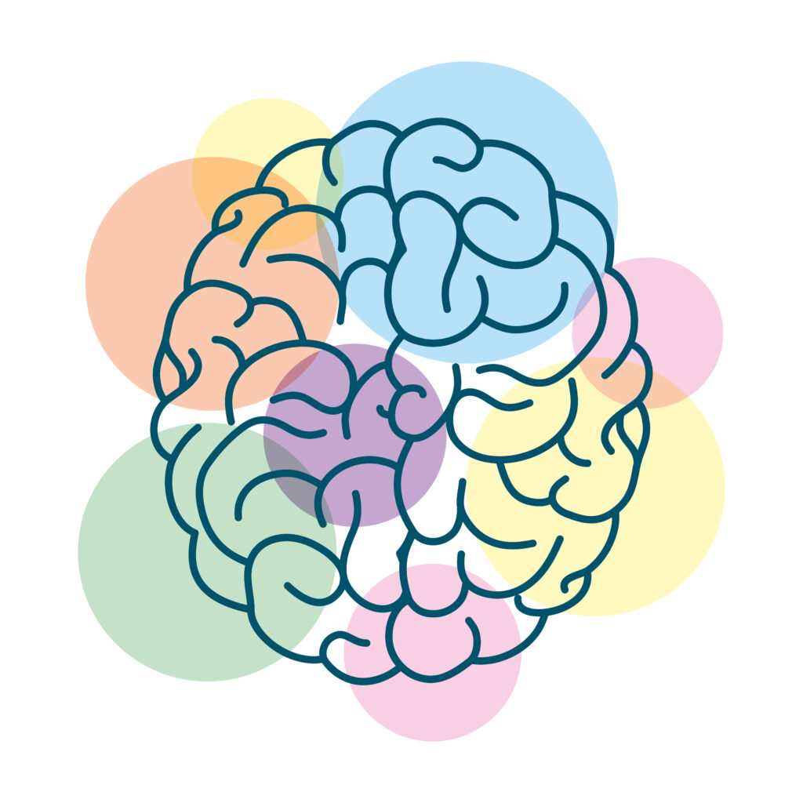
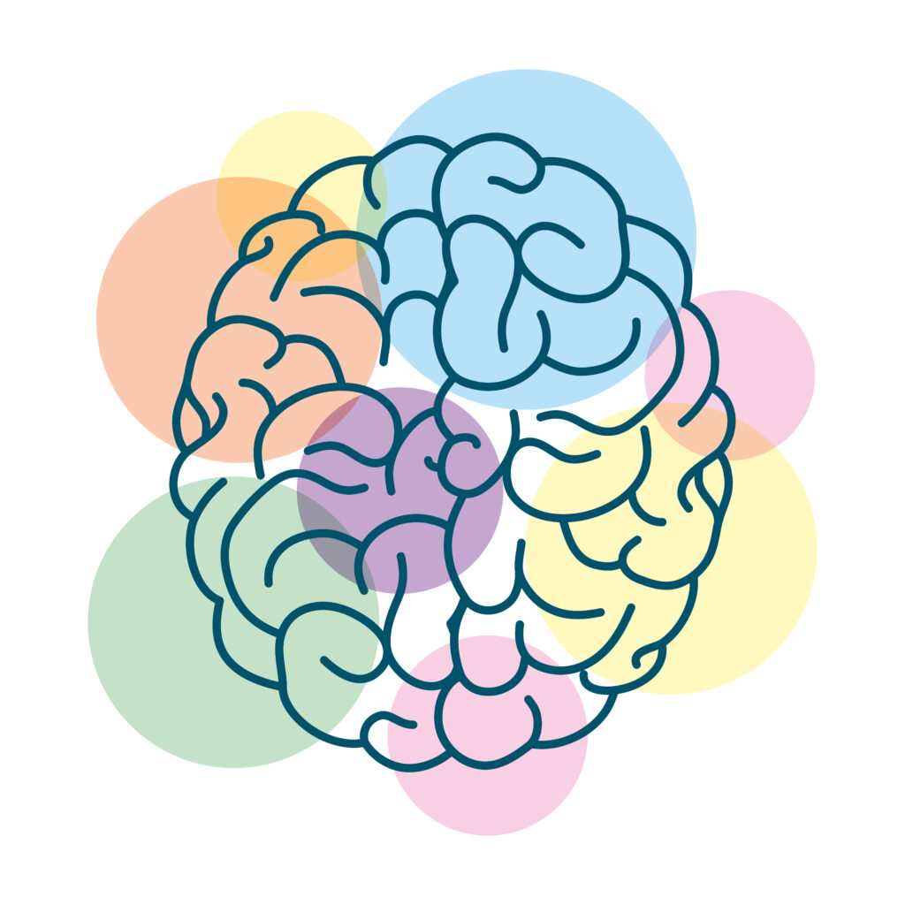

Nosso objetivo:
Este projeto foi desenvolvido com o objetivo de apoiar professores da educação especial no processo de alfabetização de alunos neurodivergentes, oferecendo uma ferramenta interativa e acessível. Através de flashcards dinâmicos, que combinam som, imagem e texto, buscamos criar um ambiente de aprendizado mais envolvente, inclusivo e eficiente.
O que queremos alcançar:
- Facilitar o processo de alfabetização
Nosso principal objetivo é fornecer uma maneira simples e eficaz de ensinar letras, sílabas e palavras aos alunos neurodivergentes. O uso de som e imagens para reforçar a memorização e compreensão é uma técnica que beneficia esses alunos, ajudando-os a associar palavras com significados visuais e auditivos.
- Aumentar a interatividade no aprendizado
Sabe-se que, para muitas crianças, especialmente aquelas com necessidades educacionais especiais, o aprendizado tradicional pode ser desafiador. Com essa ferramenta, queremos que os alunos interajam diretamente com o conteúdo, clicando em botões, ouvindo sons e recebendo apoio do professor. Isso não só torna o aprendizado mais envolvente, mas também mais eficaz.
- Promover a inclusão digital no ambiente educacional
Um dos principais objetivos do projeto é garantir que os alunos neurodivergentes tenham acesso a ferramentas adaptadas às suas necessidades, por meio da tecnologia, ajudando a reduzir barreiras de aprendizado. Queremos criar um ambiente em que todos possam progredir em seu ritmo, recebendo o suporte necessário de forma personalizada.
- Construir uma base sólida para o futuro
Ao final do processo de interação com os flashcards, o objetivo é que os alunos construam uma base sólida de habilidades de leitura e reconhecimento de palavras, fundamentais para o seu desenvolvimento educacional.
Este projeto busca não apenas proporcionar um meio eficiente de alfabetização, mas também contribuir para a autonomia e confiança dos alunos neurodivergentes em sua jornada educacional. Através de uma abordagem interativa, acessível e inclusiva, pretendemos tornar o aprendizado um processo mais estimulante e significativo para todos os envolvidos.
Com muito carinho, Educatech!